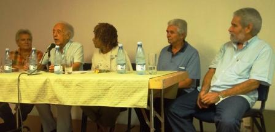
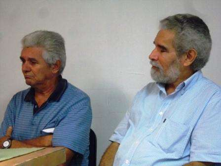

Camilo García Lopez-trigo
The last afternoon 21 August had a significant relief with the encounter between the author and his work, It organizes the Cuban book Institute in the library Provincial Rubén Martínez Villena in the Plaza de Armas, presenting on this occasion the poet and editor Alex Pausides.
César López, National Prize for literature, It began with top-flight panel of luxury that was commissioned to explore the life and work of the poet, to place him among the greatest exponents of literature “coming from the East”, next to Heredia, Zenea, Navarro Moon, El Cucalambé, Regino Boti and Poveda.
“The legendary East is not far for us”, It sentenced to distinguish it as a poet of space and time: “without denying the time, it becomes a poet of space, the space between the sea, the mountain and the river”, referring to the environment of his native Manzanillo pylon.
To highlight his work as “Energizer's poetry”, He stressed that in his work space can expand to anywhere in the world and adapt it to the time, referring to his effort and personal creativity and Coordinator General of the Havana International Festival of poetry of Director of the collection SurEditores, that from ago 20 years has promoted a large number of authors of the most diverse latitudes.

The author and his work: (from left to right) Daniel García Santos, César López, Nancy Morejón, Roberto Manzano and Alex Pausides
The national prize for literature Nancy Morejon also held the great height of the presentation of the poet to insist that “the literary truth of the island cannot be explained without the competition of certain authors who, yet straddling a century and other, they have helped to set the breath of a poetry whose uninterrupted existence has given enduring character Cuban literary writing.”
Stressed that Pausides, always looking to its origins, “It embodies the anguish of a good Cuban who saw the saw and felt the teachings of its rivers in his verses, those of its legendary history. they performed their most noble dreams”. At the same time, highlighted their trade as “ineffable Editor”, through which “It has globalized, in the best sense of the word, your own expression in the context of poetry in Spanish, written between two shores, with its corresponding variants, but affirming each in its own way the historical crossing of galleons and, above all, the search for authentic vocations.”
To particularize in his poetry collection Ensenada de Mora (2005) -on which indicated that “Cuban poetry reaches one of its more highly creative moments, unique”-, It reported observations of Roberto Fernández Retamar in an unpublished letter of 2006 where does qualify it as “one of the best books of poetry” with which it has “bumped into long” and praised him saying: “I loved the free and creative way with which you speak of cantarudas water or light up my day diademando, or ninezco, or tristar, or tenth rearticulas so can be read in more than one way”.

The author and his work: (from left to right) Roberto Manzano and Alex Pausides
On the other hand, editor and translator Daniel García Santos stressed the important history that holds Cuba poetas-editores - from José Martí Lezama Lima-through, Fayad Jamis, José Mario and bridge issues, among others-, with which Alex Pausides “It continues to increase the scope of this tradition”.
He stressed Pausides ability to combine his craft of great poet with the consecration to a cultural project that has to do with the work of others, sometimes sacrificing the own work, It opens a channel of communication to other creations. “This personal commitment to the creation in its broader sense and that part, not a vertical decree or an administrative voluntarism, but cultural beliefs that define a life, is what is identified, with visible results, in the construction of the southern collection”, said.
It is unavoidable to match Daniel García that this harmonious combination has also been to Pausides “a way of building his own Poetics; the Edition thus joins his poetry, as a complementary part, inseparable, that make, of this creative activity, It is at the core of both forms of art: poetry and editing”.
The culmination of the panel was in charge of the poet and pedagogue Roberto Manzano, who delighted the audience with a nice and thorough reflection on the poetic work of Pausides, which identified ten properties: celebratory attitude, the “I” always in the plural, renewal lexical, stylization of rural speech, appropriation of real spaces, link between nature and history, link nature and culture, crosshead of the balance (that is the key to the legitimate poet: between the cult and the popular, between ancient and modern), dialectic between the graft and the trunk and reflection of a new humanism.
“Around us there are great poets what is needed is to see them!”, sentenced Manzano, at the time that praised Pausides by convey in his work a joy of living special, It is not exhausted; by having overcome all the of his generation in the richness of words, to present them otherwise to give a novel metaphorical richness; for his commendable work, as poet full, bind it all, of magically imbricar history, nature, language, superstitions, the remedies, national defence and the extroversion of the country to the world.
Alex Pausides was born in Manzanillo pylon in 1950, He is currently Vice President of the Association of writers of the UNEAC and the author of more than one dozen books of poetry, among them: The adolescent artist notebook, Inhabitant of the wind, The House of the man, Bad magic, Small glory, Ensenada de Mora and calligraphies. Among other honors he was awarded prizes April, La Gaceta de Cuba, Literary criticism and Samuel Feijóo, of the Sociedad Económica de Amigos del País.
Before reading some of their poems - dedicated to Basilia Papastamateu and Roberto Friol, by the role that had both at the beginning of his literary life- Pausides confessed excited that has been “the most beautiful tribute I have had as an author” and he referred to the meeting as “one of the most beautiful evenings I can remember in many years”.
There was no doubt about what César López ruled at the beginning of the meeting, saying that “in his work, Alex Pausides is revealed for what it is, What was and what will remain: a true poet, faithful to its space and its time”.
By: Camilo García Lopez-trigo
Nancy Morejón
NANCY MOREJÓN / ALEX PAUSIDES OR THE FORTUNE OF WRITING POEMS
Enter the reading by a poet Alex Pausides is a revealing Act because, in many cases, as his, poetry is hidden, becoming an oasis buried in the depths of a forest. This has been my reunion with the poems of Alex Pausides, so special, so unique and, at the same time, so tucked in a legitimate tradition of the Cuban identity that they found, forever, poets such as Regino Boti and José Manuel Poveda. He was in the mouth of the young poet Luis Díaz Oduardo, in Santiago de Cuba, where I first heard the name of Pausides. Prematurely dead, luis Díaz spoke, in the course of the 1960s, with a knowledge of the facts that still surprises: "There is no landscape as the East. We want our landscape but painted with modern words, as he did with Guantánamo Boti". The Eastern landscape, as anticipated Pablo de la Torriente Brau, is an inexplicable exuberance. So much so that Paul cried out to say: "He who wants to know another country, without going abroad, to go to the East, to go to the mountains of the East".
In the framework of that legacy of Oriental poets whose senses live alarmed by the surrounding beauty –a beauty due to the untamed nature surrounding them–, the poetic art of Pausides Springs who, on the other hand, It has achieved a philosophy of the poem to anything distant from its most emblematic peers.
Born in Manzanillo pylon just in the Meridian that divides twentieth-century, 1950, She has grown two trades that go hand in hand, for it, daily. That year he protected the work of an entire generation which Pausides has neither been alien. AND, by controversy had proved this theory about the sign of the generations, the literary truth of the island cannot be explained without the competition of certain authors who, yet straddling a century and other, they helped set the breath of a poetry whose uninterrupted existence has given enduring character Cuban literary writing.
Alex Pausides, always facing their origins, always inquiring about the mystery of the air in Pilon –that every day he misses–, It embodies the anguish of a good Cuban who saw the saw and felt the teachings of its rivers in his verses, those of its legendary history. In them, performs its noblest dreams and, at the same time, He assembled the puzzle of his profession that recorded the most significant testimonies of a historic moment that put the island on the road of the fullness and its consequent modernity.
Heir of the French poet Guillaume Apollinare, Pausides does not abandon the rigor of forms, the cultivation of beauty as an inalienable right of poetry and, at the same time, exercise their civil rights with free fortitude, keeping a peculiar sense of service social while placed his office in the center of an ethics for the neighbor that is in favour of closer and more disadvantaged communities. For this reason, his expression never deviates from those that were born and, displaced by circumstances sometimes beyond, in search of new horizons, He defends in his voice everything that helped to shape its identity, civil or literary.
Quote the verses of Apollinaire, they do not alienate it, or someone back to life on the island but on the contrary make it.
Is a great value of his poetry recreate the world that saw it born and combine it with experiences around other European or continental latitudes. Therefore proclaims, with the poet elbow to the Mirabeau bridge, Paris: "Sorry that you do not know the ancient art of verses", because he is a poet of his land, of his time, the poor of the Earth, as José Martí wanted.
The philosophy of the poem in this writer a substance made by the four elements and the magic carpet that is not stripped of lyricism Communicator Word feeds. It would be impossible to describe the character of his poems here. What if I can say is that they sway between a spontaneous lyricism and that devotion to incorporate, succeeding, the Cadence of the speech of their families, of their peers, those who refined the blue of the mountains and the splendor of a haunted Bay.
As we all know, Alex Pausides is an ineffable editor that, in the last decades of the 20th century, has made possible a literary life for Cuban and world poetic creation not only collected in beautiful editions that plans and designs, together with the poet Aitana Alberti –combining both numerous wills - but latent in the heart of the intellectual experience that has formed the Organization, among other tasks, to become a true celebration of the Havana International Festival of poetry of. A fact is inseparable from the other.
The important thing, However, is that Pausides has globalized, in the best sense of the word, your own expression in the context of poetry in Spanish, written between two shores, with its corresponding variants, but affirming each in its own way the historical crossing of galleons and, above all, the search for authentic vocations. It stands out in its treatment of the language, his attention to the of the great Peruvian César Vallejo mainly in the arc that goes from Trilce (1922) to Human poems (1939). There is a tendency that amazing somersault that emerged from their free choice by unprecedented adjectives, struck to disembody them and Enthrone them in unusual verbs and nouns that the Venezuelan Edmundo Aray highlights, in fraternal reverence, as a gift that is impossible to be negotiated:
getting a scare to the word
be sure to leave his astonishment
and there same Amal
that blood away
casting magic jets
(«poetic»)
The poetry book Ensenada de Mora (2005) He entered the field of unusual, in its dazzling originality. After considering it "one of the best books of poetry that" it has "encountered in long", perceptive is the observation of Roberto Fernández Retamar in unpublished letter, written to Pausides, in 2006, When it says: "I loved the free and creative way with which you speak of" cantarudas waters o diademando of light up my day, o ninezco, o TriStar, "or rearticulas tenth so can be read in more than one way". Cuban poetry achieves with this collection of poems titled one of their most highly creative moments, unique, anchored his voice, However, in the legacy that provided other emblematic titles of the century as the Book of heroes (1964), from Pablo Armando Fernández; o The stone (1962) of Fayad Jamis; o, even, beyond his heroic city stage, Silence in voice of death (1963), of César López. The epic of a war of liberation waged in the eastern mountains, fully half of the last century, is drawn by the poet manzanilla with gesture of love, with that formal detachment that makes his one of a kind text.
Not by chance, Cintio Vitier also recognizes that nearly irrational use of language in Pausides which makes it, in his view, in "an Adamic poet" able to flee from it to understand that «language also stretches, stretch arms and legs and loves to say lluvien Instead of blandishments». So Ensenada de Mora is our generation what was Beth - the (1940-1948), Samuel Feijóo's –whose centenary, by the way, we ready ourselves to celebrate very soon–, not only for the literary creators agglutinated around the magazine Origins, that founded José Lezama Lima in the first half of the 20th century, but for the so-called generation of the 50, year of the birth of Alex just. At the same time, the young poet of pylon opens in his poems as transparent as the geographical environment in which was born and was lesson a tenderness and simplicity. We listen:
This book wants to be a testimony of my affection for the small town founded at the beginning of the last century on the banks of the Bay where I was born, and my admiration for the simple life of its people, their funny language and original, and for all the beauty and good that my they made around birth and in grateful memory remains.
They have reached a perennial readers Himilce existence, Franci, Micaela, Manolo and up to Belisario Vicente Rivas, his master. I returned and turned over the pages of Ensenada de Mora and anyone who does will receive a long-lasting and ever-changing scenario, almost virtual in their epic lyricism, because in that magical place in our most recent history I experienced not only a split of the senses, as called for Arthur Rimbaud, breathing the air of the Bay sung by Benny Moré, but because I wrote, with Aitana and Alex, at your request, My first poem for Antonio Guerrero, where, then, present poets formed the first coral in favor of his return but because there I understood the journey that goes from Ensenada de Mora (2005) to Inhabitant of the wind (2010); This last, finely studied by Enrique Sainz de la Torriente, one of the most astute critics of the island, Member of the Academia Cubana de la Lengua who, rightly, It has declared: "Cuban poetry has in" Inhabitant of the wind, a book of the most authentic experience, a book of poetry that enriches us with the strength of his most faithful and endearing testimony"; or that another collection of poems whose title is inspired by a memorable verse of the unfortunate French poet, an unknown Africa Explorer for its time, to identify behavior that "extension of consciousness" which arrojara it to the black legend of a century that no could not assimilate it nor understand.
The poet of the manzanilleras bays cala in her childhood, as usual, refracting the metaphorical signs of that provincial resident teenager in Charleville:
child's
I always wanted to
take my heart
in a tray
and so
intimately
lift it among men
as the largest
the more tender treasure
that has been given me
offer
(«the extension of innocence»)
"Here we are", as to proclaim Nicolás Guillén in 1931, to listen read and check, as he hears rain, Alex Pausides has had the fortune of writing poems, splendid poems, on this island that saw it born.
Daniel García Santos
Whenever it has given me the opportunity to refer to the condition editor, I insist on more core attribute, at least from my point of view, condition editor: the creative side of the trade. I am referring to that editor - because the term is sometimes interpreted fairly ambiguous form--which contributes consciously, with its culture and its fine-tuning critical judgement, the design of a literature to the reading public knowledge. With dedication to service and aesthetic sensibility - in sum, as the creator - that editor prosecuted the work of others, Select critically, interacts with texts, defined movements, trends and generations, It reveals findings on certain genre literary, and, at the end, Decides to, Since its full inclusion in the cultural process which seeks to enrich.
A few days ago I stumbled across the following quote, found me enlightening in the case of a North American editor, i.e., from a country in which the edition of books, like almost all things, is the market-driven. It's Michael Korda, who became director of Simon & Shuster and from that position he became one of the leaders of the industry: «Someone self-publishing books, No matter how good it is, is a business man, but someone who publishes books has a profession, as a doctor, a lawyer, an engineer or a teacher. And as all of the most noble professions, the Edition is also an art, If done right, and a mystery (…).»
As for the poetry, We are between poets and I am not best suited to refer to their essences. Suffice it to say that we are here, extolling the work of a poet who has left his own trail in the Cuban poetry, which this panel is shown eloquently. Still I director of the Cuban Editorial letters, I had the privilege to be published two of his books of poetry: Small glory (2000) and Ensenada de mora (2005). Before my step by this Publisher, already its catalogue is Classicist with two poetry collections more (Bad magic and Words to the unspeakable).
Consistent with one of their assertions, I found while you worked on these pages: «Poetry we must enhance it», Pauside presides over the South collection, founded in 1993, in the heat of the Havana International Festival of poetry of. Publishing results, It is the reward for the effort, already exhibiting the figure of 203 published titles, approximately, and covering diversity of authors from the most varied backgrounds: the Uruguayan Eduardo Galeano and Saúl Ibargoyen, Spain's Rafael Alberti and María Teresa León, the Chilean Pablo Neruda, the Hungarian Attila József, French Arthur Rimbaud, the Senegalese Leopold Sedar Senghor, the Greek Yannis Ritsos, the Haitian Jacques Roumain, Russians Evgueni Evtuchenko and Anna Ajmatova, the Angolan Agostinho Neto, the Palestinian Mahmud Darwish, the Martinique Aimé Césaire, the Persian Omar Khayyam, the Vietnamese Ho Chi Minh City, The Turk Nazim Hikmet; the Cuban José Lezama Lima, Nicolás Guillén, Roberto Fernández Retamar, Carilda Oliver Labra, Nancy Morejón, Miguel Barnet, Guillermo Rodriguez Rivera, Roberto Manzano, Alpidio Alonso, Luis Marré, among many others, including the poetry of its young devotees, with a talent already passed by the fire of criticism.
When the poet Pausides made me the honor of inviting me so submit the South collection on the occasion of the world day of poetry, I said something that I would repeat today: A poet's work is not only in the invention of a text that reveals his ghosts, aiding the management of language and literary tools, trying to converse from its most authentic sensitivity with the ungraspable reader, but also in the consecration to a cultural project that has to do with the work of others, and with the opening of a channel of communication to other creations. And surrender to that project, sometimes sacrificing the own work. This personal commitment to the creation in its broader sense and that part, not a vertical decree or an administrative voluntarism, but cultural beliefs that define a life, is what is identified, with visible results, in the construction of the southern collection. Even when the effective institutional support from the Union of writers and artists of Cuba, the vocation of service involving an effort like this, This is due to the dedication of Alex Pausides, in close partnership with Aitana Alberti, César López and Pablo Armando Fernández, bearers of their respective Poetics, added to that is the collaboration of numerous poets and writers in general who have offered their works to nurture it, and they have helped to make this look to and from the South.
Cuba has a rich tradition of poets, publishers, as part of the 19th century, It passes through the editorial work done by José Martí, and it reaches the contemporary figures such as José Lezama Lima and its origins editions, Fayad Jamís and his collection the gathering, José Mario and bridge issues, among others. The work of Pausides continues to increase the scope of this tradition.
The editor - in the sense of artifice of culture-, It is intertwined with the poetry thanks to the all-encompassing concept of creation which is the etymological root of this: The POIESIS alludes to this amplitude: do, give existence to something before it had not. But they are also linked by the fascination of the mystery. The mystery of poetry has long been witnessed by its greatest devotees. It Edition, not so much. For this reason also the initial appointment of Michael Korda liked. All of which allows me to risk the assertion that edit is also to make poetry.
So the South collection, and the insistence that the poet Alex Pausides has put in it throughout the years, He has also been a way of building his own Poetics; the Edition thus joins his poetry, as a complementary part, inseparable, that make, of this creative activity, It is at the core of both forms of art: poetry and editing.
Daniel García Santos
The author and his work, dedicated to Alex Pausides
21 August of 2013
“Poetry could save us. To save the individual is already enough. But you can't, the poor, stop the disaster. Poetry can inspire that need to change lives and transform the world - as they wanted to Rimbaud and Marx-, be useful to raise a conscious or emotional attitude to barbarism. Poetry can summon an uprising of the spirit against greed.”
- Who thus conceived the undoubted forces of poetry is the poet Alex Pausides (Manzanillo, 1950), invited to the most recent celebration of space The author and his work, coordinated by the Cuban book Institute to honor within the scope, the most prominent creators.
Many works we owe to Pausides: those of creations born of their matter of poet and in his work as editor of the SurEditores collection, It has been in the hands of countless readers. Your promotion in front of the Havana International Festival of poetry of work, It is also responsible for that are the Cuban people today closer to the contemporary Bards of the ORB.
To refer to the company that has carried out this manzanilla, with whose work he ventured into novel treatments of language are located in the call “poetry of Earth” -literary movement characterized, among other features, by a lyrical enunciation from childhood, an exquisite treatment of rural orality and the recovery of the links between nature, history and Guy - were invited to the national awards for literature Nancy Morejon and César López; editor Daniel García Santos and the poet and critic Roberto Manzano.
As the poet of space and time, the space between the sea and the mountain, It is their province, and which will be forever faithful, César López defined it. “From there his country can expand to anywhere in the world”.
In a hard-hitting article that Nancy Morejón, the author of Mutismos titled Alex Pausides or the fortune of writing poems, “so special, so unique and, at the same time, so tucked in a legitimate tradition of the Cuban identity”, expresses that “in them, the poet made his noblest dreams and, at the same time, He assembled the puzzle of his profession that recorded the most significant testimonies of a historic moment that put the island on the road of the fullness and its consequent modernity”.
The publishing result, “It is the reward for the effort, already exhibiting the figure of 203 published titles, approximately, and covering diversity of authors from the most varied backgrounds” Daniel García Santos referred, who also assessed the merit of the Edition as office with total fairness, that is in “the consecration to a cultural project that has to do with the work of others, and with the opening of a channel of communication to other creations”.
Roberto Manzano, referring to the interview which he himself make him, interested in details and philosophies of life of Pausides, and that which appears in the journal amnion (July, 2012), It is restricted to provide features of his poetry.
The celebratory attitude, ignica, fascinated of the joy of living-”Today, rare”-which may well have learned Whitman or Marti, “Since many of his phrases sound Marti”, was the first indication; I always plural, the lexical renewal, the stylization of the rural speech, the appropriation of real spaces, the link between nature and culture, and the new humanism which there is in his work, were other well-known features.
“There are a few traits that, for me, are the key to the legitimate poet: the cult, the popular, ancient and modern: the cross is going to some, they are too modern, cults, or popular, or old, but when the axis sits well on those quadrants we are facing a poet of high stature. Pausides tolerates the crosshead, When put in front of it crosses successfully this test”.
By Madeleine Sautie Rodríguez

[palabralink] Alex Pausides
Alex Pausides
Poet and editor. He was director of the El Barbudo Cayman cultural monthly. He is currently Vice President of the Association of writers of UNEAC and general coordinator of the Havana International Festival of poetry of. It directs, In addition, the southern Editors collection published in Cuba to Ritsos, Akhmatova, Szymborska, Neruda, NET, Darwish, Senghor, and Evtushenko, among others. His poems have been translated to Portuguese, French, Italian, English, Romanian, Russian and German.
See biography and poems of Alex Pausides in Palabradelmundo[/palabralink]
[palabralink] Nancy Morejón
Nancy Morejón
Poet, essayist, journalist, theatrical and literary criticism, and translator.
Degree in language and French literature from the University of Havana, in 1966. Member of the Cuban Academy of language from 1999, He is currently advisor to the Casa de las Américas, and as President of the Writers Association of the Union of writers and artists of Cuba (UNEAC) VII Congress of this completed in April of 2008.
See biography and poems of Nancy Morejón in Palabradelmundo[/palabralink]
[palabralink]
Daniel García Santo
Editor, essayist and translator. He was director of editorial letters Cuban. He currently directs the Latin American literary agency.
He has participated as a speaker on various panels of professional, especially on issues dedicated to the publication of books. It has integrated numerous literary juries: National Prize for literature, Editing and design awards, Literary translation prize, Premio Alejo Carpentier's tale, etc.
It has the distinction by the national culture.
[/palabralink]
[palabralink] César López
César López
He was born in Santiago de Cuba the 25 December of 1933.
Member number of the Cuban Academy of language and member corresponding of the Royal Spanish Academy. National Prize of literature in 1999. His work is ' City book‘
See biography and poems of César López in Palabradelmundo[/palabralink][palabralink] Roberto Manzano
Roberto Manzano
Born in Ciego de Avila in 1949. Poet, essayist, Editor, cultural promoter, Professor and member of the Union of writers and artists of Cuba.
He was editor of poetry in the lyrics Cubanas editorial. He won the prize for poetry Nicolas Guillén. His main work is The Canto de la Sabana, 1973.
See biography and poems of Roberto Manzano in Palabradelmundo[/palabralink]


Recent Comments